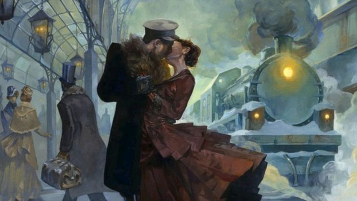
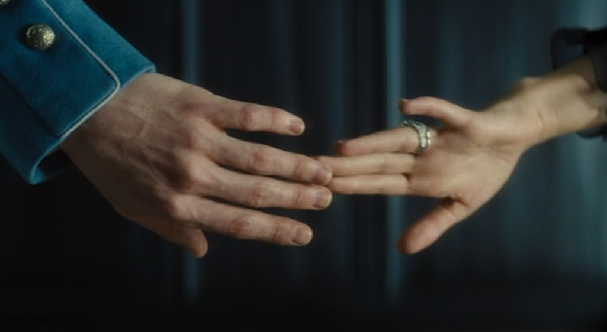
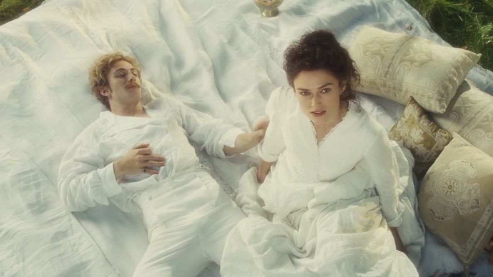

Лев Толстой — один из величайших русских писателей, и «Анна Каренина» — его культовый роман, ставший шедевром мировой литературы. Это не просто история любви, а глубокое исследование человеческой души, моральных ценностей и столкновения личности с обществом.
В центре повествования — Анна Каренина, женщина, чья жизнь разделена между долгом и сильными чувствами. Её судьба переплетается с другими героями, каждый из которых отражает разные стороны человеческой натуры. Один из ключевых персонажей — Константин Левин, землевладелец, который ищет смысл жизни в труде, семье и природе. Его путь наполнен сомнениями, поисками веры и попытками понять, что значит быть счастливым. Эти две линии — Анны и Левина — создают мощный контраст между миром страстей и миром духовных исканий.
Толстой мастерски передаёт как атмосферу высшего света Петербурга с его балами, интригами и жесткими социальными нормами, так и умиротворяющий ритм русской провинции, где труд и связь с землёй кажутся единственным путём к подлинной гармонии. Через диалоги и внутренние монологи героев он поднимает вечные темы: смысл брака, верность, общественное давление, роль женщины в семье и социуме. Судьбы персонажей развиваются в условиях, где личный выбор неизбежно сталкивается с жесткими законами общества.
«Анну Каренину» особенно впечатляющей? Её глубина и реализм. Толстой не просто рассказывает историю — он приглашает читателя размышлять о природе любви, о цене свободы и о том, каким путём человек может прийти к истине. Его язык поражает точностью и выразительностью, а психологизм героев — невероятной тонкостью и многогранностью. Он показывает любовь во всех её проявлениях: возвышенную, разрушительную, нежную, страстную, обречённую и спасительную.
«Анна Каренина» — это роман, который не оставляет равнодушным. Он захватывает, волнует и заставляет задуматься о собственной жизни и моральных принципах. Если вам нравятся произведения, в которых сплетаются судьбы, раскрываются сложные психологические портреты и поднимаются вечные вопросы человеческого существования, этот роман станет для вас незабываемым открытием.
